Agent-centric-real-to-sim · 归档于 2026-11-03
RoboSimStudio
RoboSimStudio: An Interactive Toolkit for Rapid Real2Sim of Robot Manipulation Tasks
归档到 Agent-centric real-to-sim：coding agent 把一段手机视频变成可调参的 multi-physics 仿真，再用真机失败修正它；它同时是一个基于 Newton 的仿真工具包，也和 Sim-robot-learning 相关。
TL;DR
- Problem
- 让仿真和真机的接触物理对上（Real2Sim）要选 solver、contact model、参数，并反复对照真实行为改；现有模拟器把这些藏在引擎里，人和 coding agent 都难迭代。
- Idea
- RoboSimStudio (RSS)：Newton 上的 multi-physics 仿真，把 solver / contact model / 物理参数做成场景里显式可编辑的项，给人（Viser studio + 滑块）和 coding agent（spatial-temporal feedback）同一个可交互仿真去"改 → 跑 → 看 → 再改"。
- Result
- 手机视频 → Claude Code / Codex 约 1 小时（一个 agent 56 min）建出 MuJoCo-Warp + SuperDex 的 sponge-wiping 仿真；GaP 14 轮把擦拭面积 0% → 100% 后上真机；真机失败（bar 支座被推动）由 agent 把 fixed 改成 free 修正。人用视觉反馈建了 18 个 contact-rich 任务。
Problem
模拟器能算物理，但"哪个 solver、什么 contact model、参数多少"藏在引擎里，人和 agent 都没法快速对照真实视频去调
Running example · 后面每个 stage 都跟着它走
Sponge wiping（双臂 YAM）：输入是一段手机视频 一只臂握住 bar，另一只臂用泡沫 sponge 擦掉 bar 上的 marker 条纹，没有 CAD、没有相机标定；再加一句给 coding agent（Claude Code / Codex）的 prompt Set up github.com/robosimstudio/robosimstudio and create a simulation for @wipe_the_bar.mov → 想要：一个 multi-physics 仿真（刚体臂 + 可形变 sponge，接触力可读），行为和视频一致，能在里面训 policy 并部署到真机。
flowchart LR IN["例子输入
手机视频 + prompt"] --> A1["通用模拟器 + 自己写 glue
MuJoCo / IsaacLab / Genesis / Newton"] A1 --> AX["刚体臂和 FEM sponge 要跨 solver 耦合，
agent 只能从图像猜有没有接触
Table 1：Coupled – / ~，Feedback = Custom"]:::gap IN --> B1["前沿 VLM 直接重建
Claude / GPT-6 Astra / Gemini → Blender"] B1 --> BX["场景看着对，sponge 没有形变和接触力
§2：视觉真 ≠ 物理真"]:::gap IN --> C1["专用 Real2Sim pipeline
RialTo / URDFormer / SplatSim"] C1 --> CX["固定流程重建；真机失败后改不了物理约束
Table 1：Failure-driven refinement –"]:::gap
论文没有在这个任务上跑 baseline，三条 lane 的"坏在哪"是推断：依据 Table 1 的 – / ~ / Custom、§2 Real2Sim 一段（"visual realism does not guarantee physical accuracy"）和 §3 Iterative Interface for Agents（接触事件"may be difficult to infer from images alone"）。
根本问题：solver、contact model、参数不是场景里显式可编辑的项，仿真状态也不以结构化反馈暴露，于是人和 agent 都做不了"改 → 跑 → 看 → 再改"的 Real2Sim 循环。 这篇的切入点：把这些选择显式化、可编辑，并把仿真状态转成 spatial-temporal 反馈，让人和 coding agent 共用同一个可交互 multi-physics 仿真。
Related work
| 相关工作 | 解决什么 | 怎么解决 | 和本文的区别 |
|---|---|---|---|
| 同一问题 · 别的解法 | |||
| 通用机器人模拟器 本文所属 MuJoCo, IsaacLab, ManiSkill3, Genesis, Newton | 给 robot learning 提供物理环境 | 各自的 solver，GPU 并行仿真 | 缺 coupled multi-physics 和给 agent 的结构化反馈（都要 Custom）→ RSS 在 Newton 上 co-simulate 外部引擎，反馈内置 |
| 专用 Real2Sim 重建 RialTo, URDFormer, Digital Cousins, Articulate-Anything, SplatSim | 从图片 / 视频重建 digital twin 或 cousin | 固定的重建 / 生成 pipeline | 缺可编辑的物理和失败驱动的修正 → RSS 把 solver / contact / 参数留成场景里的显式项，真机失败后 agent 直接改 |
| 前沿 VLM 重建 Claude Fable 5.1, GPT-6 Astra, Gemini 4 Argon → Blender | 从视频得到视觉合理的 3D 场景 | 模型直接生成场景和渲染 | 缺物理准确性（cable / cloth / sponge）→ RSS 让 agent 对照物理行为而不是外观迭代 |
| LLM 生成仿真任务 / 环境 GenSim, GenSim2, Video2Policy, RoboGen, Holodeck, Eureka, DrEureka | 自动生成任务、环境、reward、domain randomization | LLM 写代码生成 | 目标是"生成得多"，不对齐某一段真实视频 → RSS 以真实视频为目标把一个仿真调到一致 |
| 相似做法 · 别的问题 | |||
| Coding agent 改进机器人策略 CaP-X, GaP, ASPIRE, ENPIRE, RPG, DexAgent, agentic Push-T | 用 agent 迭代改 policy / skill | ReAct 式"改代码 → 执行 → 看反馈" | 它们改 policy，仿真物理固定 → RSS 把仿真本身交给同一类 agent 改；GaP 在本文里只做 policy 学习器 |
| Agent-computer interface SWE-agent | 让 coding agent 做软件工程 | 结构化的环境接口 + 执行反馈 | 对象是代码仓库 → RSS 给物理仿真做同样的接口：状态、接触事件、任务进度 |
来源：论文 §2 Related Work 和 Table 1，未另行检索。
Level 1 · Big picture
把 solver、contact model、参数做成可编辑项，让人和 coding agent 在同一个 multi-physics 仿真里"改 → 跑 → 看 → 再改"，直到和视频对上
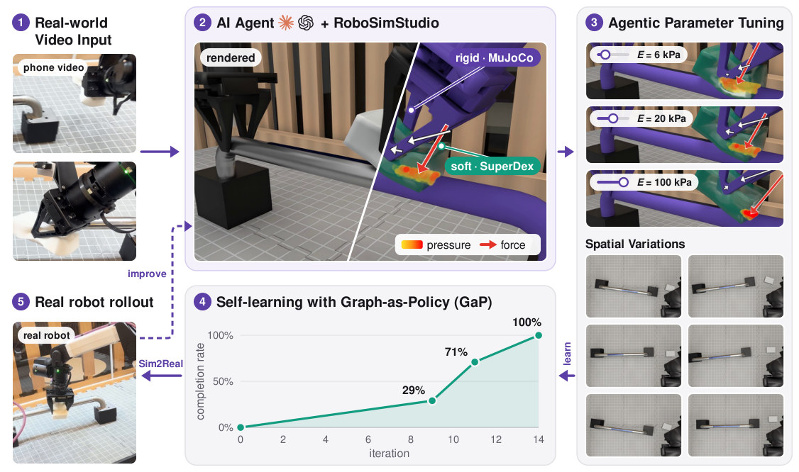
怎么读这张图
- ① Real-world Video Input：手机拍的双臂 sponge wiping 两帧，就是例子的输入。
- ② AI Agent + RoboSimStudio：左半 "rendered" 是 agent 建出的仿真渲染；右半是 multi-physics 视图，紫色 "rigid · MuJoCo" 是臂和 bar，青色 "soft · SuperDex" 是 sponge，热力图是 pressure，红箭头是 force。
- ③ Agentic Parameter Tuning：三行滑块 E = 6 / 20 / 100 kPa，同一次接触下 sponge 的压力分布随刚度变化；下面 Spatial Variations 是 6 种 bar 和 sponge 的摆放。
- ④ Self-learning with GaP：completion rate 随 iteration 走 0% → 29% → 71% → 100%（iter 14）；箭头 "learn" 表示用 ③ 的变体训练。
- ⑤ Real robot rollout：Sim2Real 箭头把 policy 部署到真机；虚线 "improve" 回到 ②，真机失败再改仿真。
flowchart LR I["Input
手机视频 + prompt"] --> M["RSS 可交互仿真
人 + agent 调到和视频一致"] M --> O["Output
verified 仿真 + policy 上真机"]
Level 2 · Stages
5 个 stage
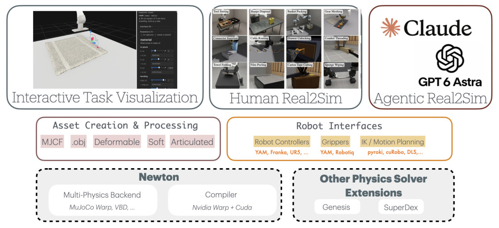
怎么读这张图
- 顶行三个入口：Interactive Task Visualization（Viser 里的 towel 和 inspector）、Human Real2Sim（18 个任务缩略图）、Agentic Real2Sim（Claude、GPT 6 Astra）——三种用法共用下面同一套框架。
- 中行左 Asset Creation & Processing：MJCF、.obj、Deformable、Soft、Articulated；例子里 bar 是刚体 asset，sponge 是 Soft。
- 中行右 Robot Interfaces：Robot Controllers（YAM、Franka、UR5）、Grippers（YAM、Robotiq）、IK / Motion Planning（pyroki、cuRobo、DLS）；例子用 YAM 双臂。
- 底行左 Newton：Multi-Physics Backend（MuJoCo Warp、VBD）+ Compiler（NVIDIA Warp + CUDA）；臂和 bar 走 MuJoCo-Warp。
- 底行右 Other Physics Solver Extensions：Genesis、SuperDex；sponge 的 FEM 走 SuperDex，和 Newton co-simulate。
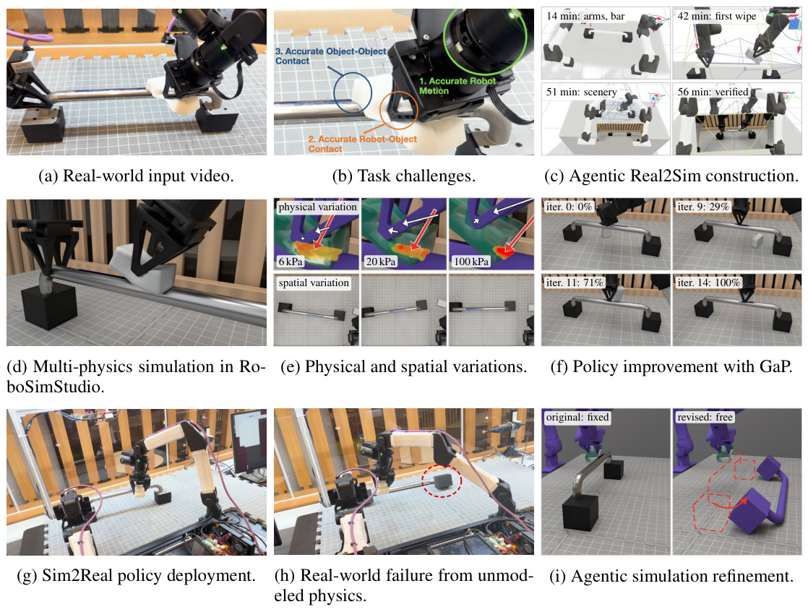
怎么读这张图
- (b) Task challenges：三个圈标出 1. Accurate Robot Motion（右臂的擦拭动作）、2. Accurate Robot-Object Contact（sponge 压在 bar 上）、3. Accurate Object-Object Contact（bar 和支座）；Stage 1–3 要把这三样都对上。
- (c) → (d)：agent 从空场景到 verified 的四个时间戳，结果是 (d) 的渲染；Stage 1–3。
- (e) → (f) → (g)：变 sponge 刚度（6 / 20 / 100 kPa）和布局，GaP 从 iter 0 的 0% 学到 iter 14 的 100%，再上真机；Stage 4。
- (h) → (i)：真机的红圈是被推动的 bar 支座；(i) 左 original: fixed，右 revised: free；Stage 5。
flowchart TD S1["1 · Compose scene
YAM 双臂 + bar + sponge，几何从视频估"] --> S2["2 · Couple physics
MuJoCo-Warp 刚体 + SuperDex FEM sponge"] S2 --> S3["3 · Refine loop（人 / agent）
改 → 跑 → 看反馈，56 min verified"] S3 --> S4["4 · Vary + learn（GaP）
E 6/20/100 kPa，30 布局 → 0% → 100%"] S4 --> S5["5 · Real → fix sim
真机失败：bar 支座 fixed → free"] S5 -. 再评估、再改进 .-> S3 click S1 href "#stage-1" click S2 href "#stage-2" click S3 href "#stage-3" click S4 href "#stage-4" click S5 href "#stage-5"
点击 stage 展开 Level 3 细节。Stage 3 的循环是整个工具的核心，Stage 5 是同一个循环用真机反馈再跑一次。
Level 3 · Details
每个 stage 的细节
Stage 1 Compose scene：assets + robot interface + 显式的物理选择 视频 + prompt → 场景描述（robot、objects、每类物理用哪个 solver）
- Why：Real2Sim 第一步是把场景写出来；RSS 把"物体是什么"和"用什么 solver 算它"分开写，后者可以改而不重写任务（§3）。
- How · robot interface：机器人声明式指定 model、joints、mounting、hand geometry；统一的 FK / IK / motion generation / control 接口；IK 可换 solver（pyroki），motion 含 joint-space、Cartesian、guarded contact 和 cuRobo 避碰规划。
- How · 观测边界：policy 在 joint 或 end-effector 空间下命令；被操作物体的 privileged state 和 robot 能看到的观测分开。
- 支持的机器人：Franka Panda、UR5e、单臂和双臂 YAM，可扩展。
flowchart LR V["视频帧
双臂擦 bar"] --> G["估几何 + 选 assets
YAM×2, bar, sponge"] G --> P["指定物理
臂/bar: rigid · sponge: soft"]
Running example 在这一步
agent 从视频估出场景几何，配置 YAM 双臂、bar、sponge 的 asset（§4.3）；Fig. 7c 第一格 14 min: arms, bar 就是这一步完成的时刻。
Stage 2 Couple physics：Newton 内部 solver 之间、以及和外部引擎 co-simulate 场景描述 → 可运行的 multi-physics 仿真，接触力 / 压力可读
- Why：一个场景里同时有关节臂、刚体和可形变物，没有单一物理模型够用（§3）。
- How · 默认分配：articulated robot → MuJoCo-Warp；cable、cloth → Vertex Block Descent (VBD)；soft body → 外部引擎（SuperDex、Genesis）与 Newton co-simulate。
- How · 耦合：Newton 内部 solver 之间交换接触力；和外部引擎交换 pose 和 contact wrench。
- 关键：solver、coupling 方式、contact model、材料参数都是场景里的显式条目，改它们不用重写任务。
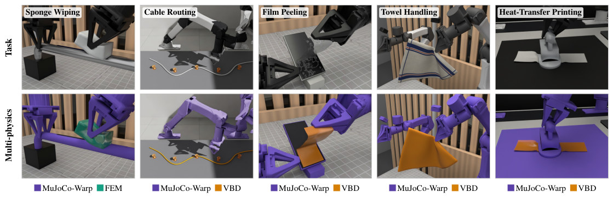
怎么读这张图
- Sponge Wiping（第一列）：臂和 bar 紫色 = MuJoCo-Warp，sponge 青色 = FEM，就是例子。
- Cable Routing、Film Peeling、Towel Handling、Heat-Transfer Printing：臂紫色 MuJoCo-Warp，线缆 / 薄膜 / 毛巾 / 转印纸琥珀色 = VBD。
- 共同点：五个任务用同一套 robot interface 和场景描述框架，只是 solver 分配不同。
flowchart LR R["Newton · MuJoCo-Warp
YAM 臂, bar"] <--> X["交换 pose / wrench"] X <--> S["SuperDex FEM
sponge"] X --> F["输出
force, pressure"]:::win
Running example 在这一步
臂和 bar 在 Newton 的 MuJoCo-Warp 里，sponge 在 SuperDex 的 FEM 里；擦拭时读出接触力和压力分布（Fig. 7d，Fig. 1 ② 的热力图和红箭头）。
Stage 3 Refine loop：人用 Viser 滑块，agent 用 spatial-temporal feedback，同一个仿真 初版仿真 + 真实视频 → 行为和视频一致的 verified 仿真
- Why：物理选择只能对照真实行为反复改；人和 agent 的循环本质相同：改场景 → 执行 → 看差异 → 再改（§1）。
- How · 人（Viser studio）：浏览器里选中、拖动、检查物体，直接控制臂；每个物体的 inspector 暴露参数、单位和范围；stiffness / damping 运行中可改，需要重建场景的参数单独标出（Fig. 4）。
- How · agent：rollout 组织成 robot motion primitives；仿真状态转成 spatial-temporal feedback：target error、object motion、contact events、grasping / slipping、task progress；因为来自仿真状态，能看到图像看不出的接触；agent 把结果归因到动作，改 policy 或仿真参数，直到和视频一致。
- How · 人 + agent 同时在：agent 改场景时人同步在 Viser 里看，拖滑块调 stiffness / damping / contact，异步给指令，不打断 agent 的工作流（§3 Human-in-the-Loop Agentic Real2Sim）。
- How · 力反馈变体（§4.2，论文用 tool-hanging 示例）：Gello leader arm 驱动仿真臂，命令关节和仿真关节的差作为反馈从 leader 电机回传；速度相关的 deadband 避免把仿真延迟当成接触，仿真暂停或落后时释放反馈；夹爪用实测开度而不是命令开度，区分抓到东西和空合。
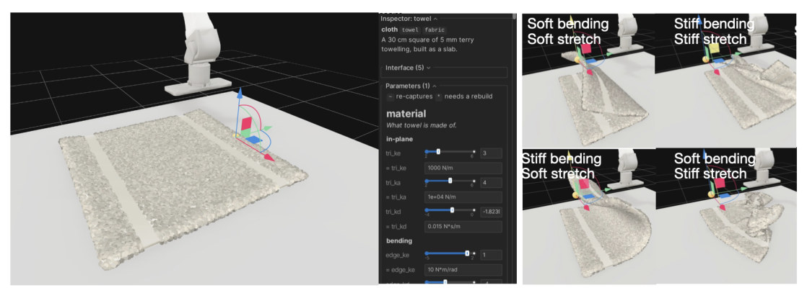
怎么读这张图
- 左图场景：一块 "30 cm square of 5 mm terry towelling" 的 towel 躺在桌上，臂在上方，拖拽手柄（红绿蓝）在毛巾一角。
- 左图 inspector 面板：标签 cloth · towel · fabric；Parameters 里 "re-captures" 和 "needs a rebuild" 标出哪些参数改了要重建；material → in-plane：tri_ke = 1000 N/m（拉伸刚度）、tri_ka = 1e+04 N/m、tri_kd = 0.015 N*s/m；bending：edge_ke = 10 N*m/rad（弯曲刚度）。
- 右四格：Soft bending / Soft stretch、Stiff bending / Stiff stretch、Stiff bending / Soft stretch、Soft bending / Stiff stretch；同一拖拽下褶皱形状明显不同，这就是"调参 = 直接看物理行为"。
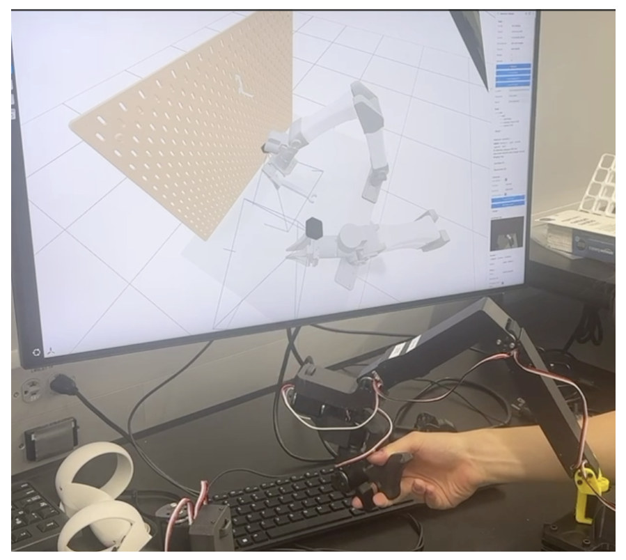
flowchart TD M["改场景 / 参数
agent 改代码，或人拖滑块"] --> E["执行 motion primitive
一次擦拭"] E --> O["看反馈
contact events · object motion · progress"] O -- 和视频不一致 --> M O -- 一致 --> V["Verified 仿真
56 min"]:::win
Running example 在这一步
两个 agent（Claude Code 里的 Claude Fable 5.1、Codex 里的 GPT-6 Astra）各自独立约 1 小时建出仿真。仿真反馈帮它们发现 robot kinematics 和接触条件的错误，调整擦拭动作让 sponge 真正贴到 bar。一个 agent 的时间线（Fig. 7c）：14 min: arms, bar → 42 min: first wipe → 51 min: scenery → 56 min: verified。
Stage 4 Vary + learn：变物理参数和布局，GaP 用仿真反馈自学习，上真机 verified 仿真 → 鲁棒的 policy，部署到真机
- Why：一个仿真训出的 policy 不鲁棒；RSS 的参数是显式的，直接改就能生成变体（Fig. 1 ③）。
- How · 物理变体：变 sponge 刚度，Young's modulus E = 6 / 20 / 100 kPa（Fig. 7e 上行，压力分布跟着变）。
- How · 空间变体：生成 30 个 bar 和 sponge 的空间布局（Fig. 7e 下行）。
- How · 学习：GaP（Graph-as-Policy，同一组的 multi-agent self-learning harness）用 RSS 的 spatial-temporal 仿真反馈改进 policy；改进后的 policy 部署到真机完成擦拭（Fig. 7g）。
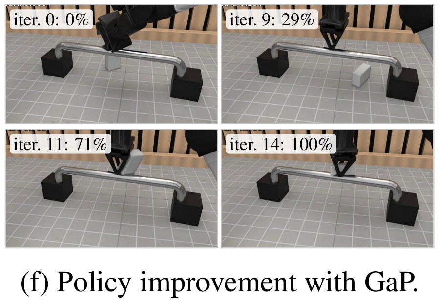
flowchart TD V["Verified 仿真"] --> Var["变体
E 6 / 20 / 100 kPa · 30 个布局"] Var --> G["GaP 迭代
擦拭面积 0% → 29% → 71% → 100%（iter 0/9/11/14）"]:::win G --> R["真机部署
完成擦拭（Fig. 7g）"]
Running example 在这一步
仿真里的 simulated wiped area：iter 0: 0% → iter 9: 29% → iter 11: 71% → iter 14: 100%（Fig. 7f / Fig. 1 ④）。随后 policy 在真机上完成擦拭（真机视频见 Results E5）。
Stage 5 Failure-driven refinement：真机失败 → agent 改仿真的物理约束 真机失败视频 + 失败描述 → 修正后的仿真
- Why：仿真里没建模的物理会在真机暴露；要能把失败反馈回仿真（Table 1 最后一行，只有 RSS 打勾）。
- 失败：真机一次 rollout 里擦拭动作推动了 bar 的支座，仿真里支座是 fixed 的，于是 sponge 失去接触（Fig. 7h，红圈）。
- How · 诊断：agent 看失败视频和描述，判断原始仿真错误地把 bar supports 固定在环境上。
- How · 修改：把 fixed constraint 换成 free rigid body，bar 和支座能在接触力下运动（Fig. 7i）。
- How · 验证：在不同擦拭轨迹和接触条件下评估：原 fixed-bar 仿真重现不了位移，revised 仿真在 sponge 施力够大或偏离 bar 中心时出现 bar 移动和倾倒；修正后的仿真可用于进一步评估和改进 policy。
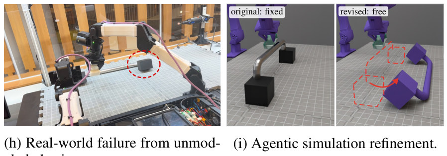
flowchart LR Fh["真机失败
bar 支座被推动，sponge 脱离"]:::gap --> A["agent 诊断
supports 被错误 fixed"] A --> Fx["改为 free rigid body
重现位移和倾倒"]:::win
Running example 在这一步
agent 拿到失败视频和一句失败描述，把 bar supports 从环境的 fixed constraint 改成 free rigid body；修正后的仿真在 off-center 擦拭下重现了 bar 的位移和倾倒（Fig. 7i）。
Recap：例子覆盖了论文的哪些 idea
| 论文里的 idea | 例子里在哪体现 |
|---|---|
| Robot interface（声明式 robot、统一 FK/IK/motion） | Stage 1：YAM 双臂一句配置 |
| Solver / contact model / 参数显式可编辑 | Stage 1 指定、Stage 3 调、Stage 4 变、Stage 5 改 |
| Multi-physics coupling（Newton 内部 + 外部引擎） | Stage 2：MuJoCo-Warp 臂 + SuperDex FEM sponge |
| 人的交互界面（Viser、inspector、滑块） | Stage 3：论文用 towel 的 Fig. 4 展示，例子里人可同步看 agent 的场景 |
| agent 的 spatial-temporal feedback | Stage 3：发现 kinematics 和接触错误，调到 sponge 贴 bar |
| Human-in-the-loop agentic Real2Sim | Stage 3：人异步调滑块、给指令，不打断 agent |
| Force-feedback Real2Sim（Gello） | Stage 3 的变体：论文用 tool-hanging 示例，不在 sponge 例子里 |
| 物理 / 空间变体 | Stage 4：E 6/20/100 kPa，30 个布局 |
| GaP self-learning + Sim2Real | Stage 4：0% → 100%，真机完成擦拭 |
| Failure-driven simulation refinement | Stage 5：bar 支座 fixed → free |
| 18 个 contact-rich 任务 | Results E2：人用视觉反馈建的，不在例子里 |
Results
一个 pilot study：工具能建 18 种接触任务，agent 能从一段视频在一小时内建出一个，仿真里学的 policy 能上真机，真机失败能反过来改仿真
顺序同论文：E1 和现有框架比缺什么（Table 1）→ E2 人用视觉反馈能建多少任务（§4.1）→ E3 人用力反馈能感到什么（§4.2）→ E4 agent 从视频建仿真要多久（§4.3）→ E5 仿真里 GaP 学得怎样、真机行不行（§4.3）→ E6 真机失败能否改回仿真（§4.3）。全文没有和别的方法比成功率或速度的实验：E1 比的是功能有无，E2、E3、E6 是定性，E4 报的是时间，E5 报的是仿真里的擦拭面积。
E1和 MuJoCo / IsaacLab / ManiSkill3 / Genesis / Newton 比，RSS 多了什么？§2 · Table 1
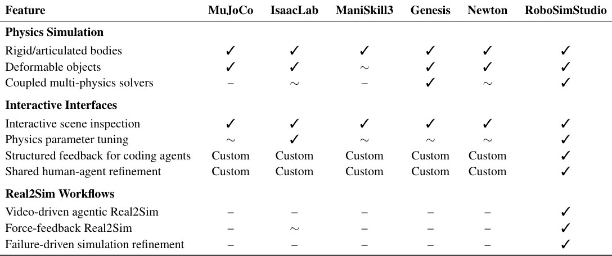
- 说明什么
- 功能上多了三个 Real2Sim 工作流和两个接口。Video-driven agentic Real2Sim、Force-feedback Real2Sim（IsaacLab 为 ~）、Failure-driven simulation refinement 三行只有 RSS 打勾；Structured feedback for coding agents 和 Shared human-agent refinement 其它五个都是 Custom；Coupled multi-physics solvers 只有 Genesis 和 RSS 是 ✓（IsaacLab、Newton 为 ~）。
- 在故事里
- 撑起 Problem 的三条 lane：物理能力大家都在补齐，差的是把它交给人和 agent 迭代的接口。
- 指标
- 作者自评的功能有无，没有精度、速度或成功率的数字。
- 怎么评测
- 六个框架，11 个功能项，作者按文档和实现判断。
- 对 RSS 有利之处：行是按 RSS 的卖点列的；"Custom" 意味着别的框架也能做，只是要自己写。
E2人用视觉反馈循环，能在 RSS 里建出哪些 contact-rich 任务？§4.1 · Fig. 5
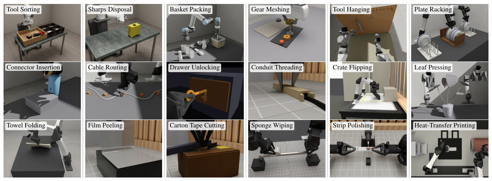
- 说明什么
- 覆盖面：18 个任务，跨刚体接触、关节机构、cable、cloth、soft body。论文点名三例：Connector insertion（USB-C 亚毫米间隙，mesh contact + 可调 collision resolution）、Leaf pressing（shell 仿真，按压后回弹）、Strip polishing（从 solver 读接触力，用 Preston 方程算材料去除）。
- 在故事里
- 证明 Stage 1–3 的人工路径够通用：同一套 robot interface 和场景描述，换 solver 分配就能换任务（Fig. 3）。
- 指标
- 定性："用户执行任务，比较仿真和真实的运动与形变，直接调 contact 和材料参数，直到两者 qualitatively agree"；没有逐任务的对齐数字或用时。
- 怎么评测
- 从真实任务的观察出发，用户在 studio 里选 robot 和 asset、摆几何、选物理模型，再在视觉循环里调参。
- 没有 baseline，也没说每个任务花了多久、由几个人建。
E3通过 Gello 的力反馈，操作者能感到仿真里的接触吗？§4.2 · Fig. 6
- 说明什么
- 能：操作者感到工具插进挂架时的接触，并据此调整动作。反馈来自所选 solver 和参数算出的力，所以既能采示教，也能直接评估 contact model。
- 在故事里
- Stage 3 的第三种反馈：视觉之外，人还能"摸"到仿真的接触模型对不对。
- 指标
- 定性，没有数字。
- 怎么评测
- 任务：从桌上拿起薄工具插进 hanger；低成本 Gello leader arm 驱动仿真臂，命令与仿真关节的差从 leader 电机回传。
- 两个工程处理：速度相关 deadband，仿真暂停或落后时释放反馈；夹爪用实测开度。没有和无力反馈的对照。
E4off-the-shelf coding agent 从一段手机视频建出 multi-physics 仿真，要多久？§4.3 · Fig. 7c
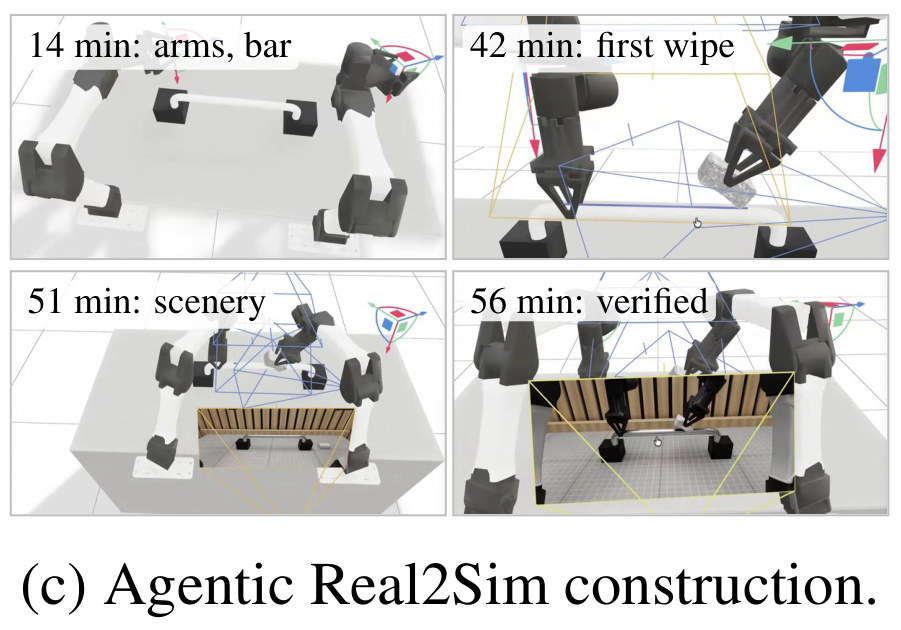
| 时间（Fig. 7c） | 仿真里有了什么 |
|---|---|
| 14 min | 两只臂和 bar |
| 42 min | 第一次擦拭（sponge 接触到 bar） |
| 51 min | 场景背景（木条墙、桌面） |
| 56 min | verified：仿真行为和视频对上 |
这张表是从 Fig. 7c 的四个标签整理的，论文没有更细的时间记录。
- 说明什么
- 约 1 小时，无 CAD、无相机标定。两个 agent 各自独立建出仿真；其中一个 56 min 完成验证。仿真反馈帮 agent 发现 robot kinematics 和接触条件的错误，把擦拭动作调到 sponge 贴住 bar。
- 在故事里
- Stage 1–3 的 agent 路径可行：RSS 的接口够让通用 coding agent 不加改造地用。
- 指标
- 建成的时间；"verified" 的判据是 agent 用视觉观察加 spatial-temporal 反馈判断仿真和视频一致，论文没给定量阈值。
- 怎么评测
- 一个任务（双臂 sponge wiping），一段手机视频，两个 agent：Claude Code 里的 Claude Fable 5.1、Codex 里的 GPT-6 Astra。
- 没有 baseline（比如没有 RSS 接口的同一 agent），也没说跑了几次、人有没有干预。
E5在仿真变体里 GaP 学得怎样，学出的 policy 能上真机吗？§4.3 · Fig. 7e–g
| GaP iteration（Fig. 7f） | simulated wiped area |
|---|---|
| 0 | 0% |
| 9 | 29% |
| 11 | 71% |
| 14 | 100% |
这张表是从 Fig. 7f 的标签整理的；Fig. 1 ④ 的折线只标了这四个点。
- 说明什么
- 仿真里 14 轮从 0% 到 100%，真机能完成擦拭。GaP 用 RSS 的 spatial-temporal 反馈自我改进；部署到真机"完成了擦拭任务"（Fig. 7g）。
- 在故事里
- Stage 4：显式参数让变体（E = 6 / 20 / 100 kPa，30 个布局）一改就有，仿真反馈够 GaP 学，且学到的东西能过 sim-to-real。
- 指标
- simulated wiped area（仿真里被擦掉的 marker 面积比例）；真机只说"完成"，没有成功率。
- 怎么评测
- 仿真：变 sponge 刚度和 30 个 bar / sponge 布局，GaP 迭代 14 轮；论文没说每轮评多少个变体、面积怎么算。
- 真机：同一台双臂 YAM 工位；没有 baseline policy，没有试验次数。E6 的失败说明至少有一次 rollout 没成。
E6真机失败能否反过来让 agent 修正仿真？§4.3 Real-world Feedback and Simulation Refinement · Fig. 7h, 7i
- 说明什么
- 能：修正后的仿真重现了真机上的位移和倾倒，原仿真不能。agent 从失败视频和描述判断"bar supports 被错误地固定在环境上"，把 fixed constraint 改成 free rigid body。
- 在故事里
- Stage 5，也是 Table 1 最后一行的证据：仿真里的约束是可读可改的数据，真机失败才能变成一次修改。
- 指标
- 定性：修正后的仿真在"sponge 施力够大或偏离 bar 中心"时出现 bar 移动和倾倒，原仿真没有；没有位移量或复现率。
- 怎么评测
- 一次真机失败 rollout 的视频 + 一句失败描述给 agent；agent 改场景后在不同擦拭轨迹和接触条件下评估。
- 论文说修正后的仿真"可用于"进一步改进 policy，但没有报告改进后再上真机的结果。
Limits
局限和开放问题（论文自述）
- 这是一个 developing system 加 pilot study，只说明可行性。
- agent 建仿真依赖 RSS 已有的材料模型、物理耦合和 robot asset；能力受支持的 solver 限制。
- 和外部引擎 co-simulation 有计算开销，可能限制吞吐。
- sim-to-real 只在一个任务上做；仿真和真实的一致性主要靠定性观察。
- 未来：跨任务的定量评估，包括仿真精度、接触力、物体轨迹、agent 建仿真的时间、真机成功率。
- 页面补充：Table 1 的对比是功能有无，不是精度或速度的数字；18 个任务也没有报告每个任务的对齐指标。
For Agent-centric real-to-sim
对我们有什么用
- 我们的 real2sim-anything-indoor（视频 → Blender 房间）正是本文说的"视觉真 ≠ 物理真"那条路；RSS 补的是接触物理这一层：solver / contact / 参数做成 agent 可改的显式项，仿真状态转成 contact events / progress 的结构化反馈。WorldClaw 的 Genesis sim 可以直接借这个"给 agent 的反馈接口"的设计，而且 RSS 本身就把 Genesis 作为外部 solver 之一。
- RSS 的 agent 工作流就是 Claude Code / Codex + 一个 repo + 一段视频，和我们 robot-harness 里 coding-agent-as-policy 的形态同构；区别是它让 agent 改的对象从 policy 扩到仿真本身，policy 交给 GaP。两者可以在同一个 Runtime 里串起来。
- Failure-driven refinement（真机失败视频 → agent 改仿真约束 → 再评估）是我们 real2sim 闭环里还没有的一环；它要求仿真里的约束（fixed vs free）是可读可改的数据，而不是埋在场景生成代码里。